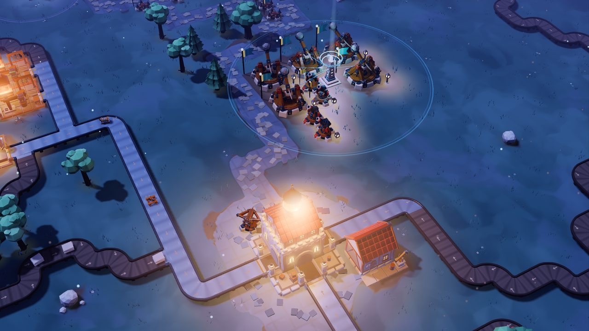
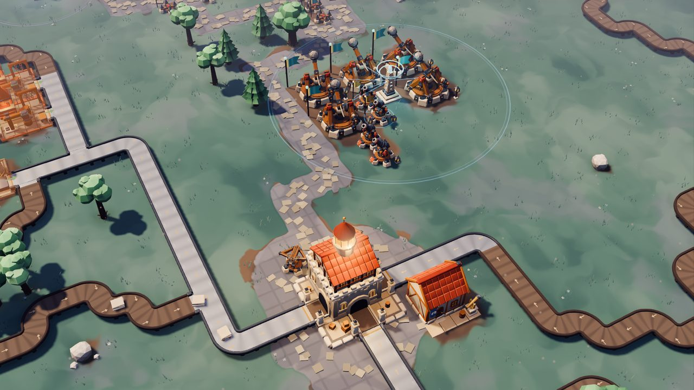
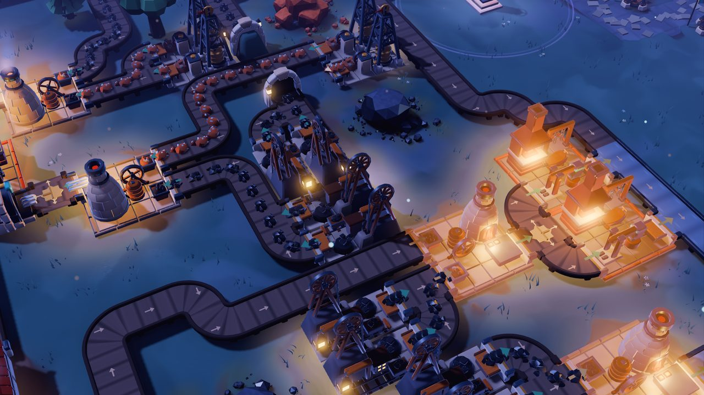
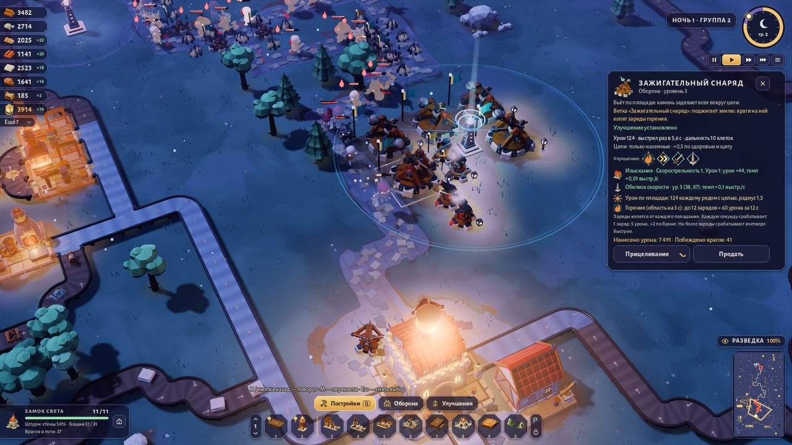
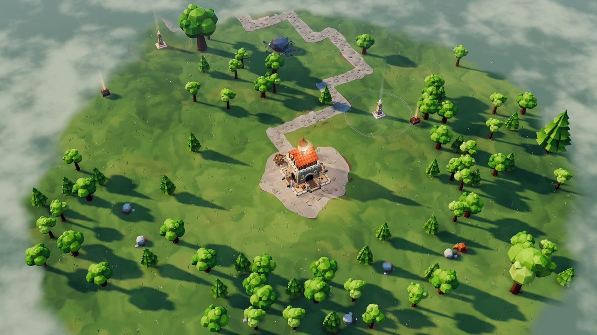
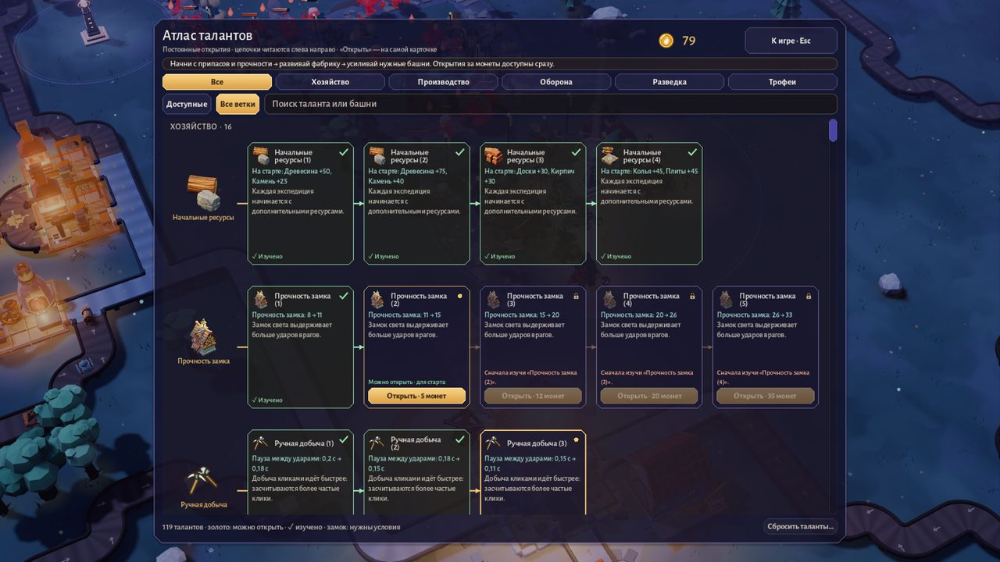

День — стройка
Лесорубы, каменоломни, лесопилки и плавильни. Ресурсы едут по лентам в замок, а из него — на новые постройки и башни.
Фабрика и tower defense · Windows и macOS
Построй фабрику.
Удержи ночную осаду.
Днём рубишь лес, прокладываешь ленты и ставишь мастерские. Ночью по дороге к замку идут скелеты — и всё, что ты построил, работает на оборону. А за границей леса ждёт источник тьмы.
Смена суток
Один и тот же уголок карты в полдень и после заката. Потяни ползунок — и посмотри, как загораются фонари, окна мастерских и маяк над замком.


Лесорубы, каменоломни, лесопилки и плавильни. Ресурсы едут по лентам в замок, а из него — на новые постройки и башни.
По дороге идут скелеты, щитоносцы, колдуны и разведчики, на шестую ночь — босс региона. Свет замка, фонарей и маяков — всё, что держит тьму.
Что внутри

Фабрика
Ставь лесорубов и каменоломни у залежей и тяни ленты зажатой кнопкой мыши — повороты и стыки сложатся сами. Развилки, слияния, перекрёстки и подземные ленты разводят потоки, а лесопилки, плавильни, угольные печи и кузницы превращают сырьё в то, из чего строят башни.

Оборона
Самострелы и баллисты, катапульты и бомбарды, смоляные бочки, шипы, цепной гарпун, ракетная башня, катушка Теслы и кузнечный молот. Башни набирают опыт в бою, а у каждой — две ветки: поджечь землю, пробить броню, достать летающих.

Экспедиция
Мир скрыт туманом. Маяки и разведка открывают его клетка за клеткой: в глубине — сундуки, алтари с кристаллами и вражеская крепость. Победи босса шестой ночи или собери кристаллы и возьми крепость штурмом — так выигрывается регион.

Прокачка
За каждую экспедицию начисляются монеты. Они идут в атлас талантов: стартовые припасы, прочность замка, новые здания и башни, усиления разведки. Для тех, кому мало, — испытания после победы и моды.
В движении
Двадцать секунд поздней игры без монтажа: солнце садится, загораются фонари, ночная колонна выходит к башням.
Скриншоты
Кадры из версии 0.9.33: графика и интерфейс такие же, как в игре.
Бесплатно
Ранняя версия: игра активно развивается, новые сборки выходят каждые несколько дней. Сохранения переживают обновления и переустановку.
Игра для компьютера. Отправь ссылку себе на Windows или Mac:
Windows 10 или 11 (64 бит) · видеокарта с Vulkan · ≈700 МБ на диске
EmberFoundry-Windows-Setup.exe
—Apple Silicon с macOS 13+ или Intel с macOS 11+ · ≈700 МБ на диске
EmberFoundry-macOS.dmg
—Все версии и что в них изменилось — страница выпусков на GitHub.
Как сделано
Ember Foundry сделана на Godot 4: от первого прототипа 15 сентября 2026 года до версии 0.9.33 — шесть недель. Почти всё, что видно на экране, собирается скриптами, поэтому игру можно быстро менять и проверять автоматически.
Вопросы
Да. Ранняя версия бесплатна: без регистрации, рекламы и покупок внутри.
Пока на русском: интерфейс, подсказки и описания.
Установщик для Windows не подписан платным сертификатом, а приложение для Mac не заверено в Apple. Поэтому Windows SmartScreen и macOS Gatekeeper один раз просят подтверждения — шаги описаны в разделе «Скачать». Контрольные суммы SHA-256 помогают убедиться, что файл не изменён.
Windows: %APPDATA%\Godot\app_userdata\Ember Foundry. macOS: ~/Library/Application Support/Godot/app_userdata/Ember Foundry. Обновление и удаление игры их не трогают.
Windows 10 или 11 (64 бит) с видеокартой, поддерживающей Vulkan, либо Mac на Apple Silicon (macOS 13+) или Intel (macOS 11+). На диске — около 700 МБ. Качество графики настраивается в меню.
Да: игра читает контентные моды, у каждого набора модов — свой профиль прогресса. Менеджер модов — в главном меню.
Первая экспедиция — в Изумрудную чащу. Шесть дней, шесть ночей и одна дорога к замку.
Скачать бесплатно